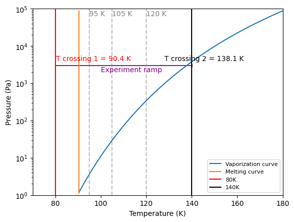

Plotting Data
Contents
Plotting Data#
Annotations#
We will plot the P/T diagram of ethane (make link towards - relevant section) and use different tools to annotate the plot, making it more explanatory. This example as been produced by Pierre and if you want to know more about the experiment itself to whome it refers to, I advise you to check it here
#!/usr/bin/python
import matplotlib.pyplot as plt
import numpy as np
T_triple = 90.368
P_triple = 1.1
npoints = 15
T_range_melt = np.zeros(npoints)
for i in range(npoints):
T_range_melt[i] = i*0.001 + T_triple
P_melt = np.zeros(npoints)
for i in range(npoints):
P_melt[i] = (1+(2.24*(((T_range_melt[i])/T_triple) - 1) + 1.05*(pow((T_range_melt[i])/T_triple, 2.55) - 1))*1e8)*1.14
if 1000 < P_melt[i] < 10000:
T_vap_1 = T_range_melt[i]
ntruc = 1000
P_vap = np.zeros(ntruc)
T_vap = np.zeros(ntruc)
for i in range(ntruc):
T_vap[i] = T_triple + i*0.1
P_vap[i] = 1e5*10**(4.5-(791.3/(T_vap[i]-6.422)))
if 2900 < P_vap[i] < 3100:
T_vap_2 = T_vap[i]
T_xp_1 = (80)
P_xp_1 = (3000)
T_xp_2 = (140)
P_xp_2 = (3000)
plt.plot(T_vap, P_vap, label = 'Vaporization curve')
plt.plot(T_range_melt, P_melt, label = 'Melting curve')
plt.axvline(x=T_xp_1, label= '80K', color='red')
plt.axvline(x=T_xp_2, label= '140K', color='black')
plt.axvline(x=95, color='grey', ls='--', alpha=0.5)
plt.annotate('95 K', xy=(95, 65000), color='grey')
plt.axvline(x=105, color='grey', ls='--', alpha=0.5)
plt.annotate('105 K', xy=(105, 65000), color='grey')
plt.axvline(x=120, color='grey', ls='--', alpha=0.5)
plt.annotate('120 K', xy=(120, 65000), color='grey')
plt.arrow(T_xp_1, P_xp_1, 60, 0, head_width=1000, head_length=0.2, color='purple')
plt.annotate('T crossing 1 = {0:.1f} K'.format(T_vap_1), xy=(T_vap_1, P_xp_2), xytext=(T_vap_1 -10 , 4000), color='red')
plt.annotate('T crossing 2 = {0:.1f} K'.format(T_vap_2), xy=(T_vap_2, P_xp_2), xytext=(T_vap_2 -10 , 4000))
plt.annotate('Experiment ramp', xy=(110, 3000), xytext=(100, 2000), color='purple')
plt.ylim([1, 1e5])
plt.yscale('log')
plt.xlim([70, 180])
plt.xlabel('Temperature (K)')
plt.ylabel('Pressure (Pa)')
plt.legend(prop={'size': 8})
plt.savefig('ethane_PT_diagram.png')
plt.show()
